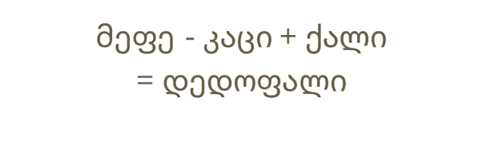

I am a PhD candidate in Applied Mathematics at UC Davis studying emergent dynamical phenomena in complex networks, drawing inspiration from a variety of sources and applications. Emergence implies that the whole is greater than the sum of its parts. The birth of this surplus complexity is the central focus of my research, and Network Science, studying the interactions between units, is the perfect framework for it.
Networks appear everywhere, from quantum network of Feynman diagrams that represents the fabric of matter, to the kinship network that represents the evolutionary fabric of life. From the Deep Neural Networks to our brains. And from the tiny protein machinery driving our cells, to the massive power grids, world-wide-web, and all kinds of logistic networks and supply chains that keep our society running.
My research usually combines numerical methods with analytical work. I use the mathematical tools from my Applied Math PhD program, the ability to neglect terms without reservation from my MS in Physics, and computational skills from my BS in Computer Science.
Ongoing research projects
Flows on Networks
In this ongoing research project, we study the dynamics of flows on networks under various symmetries and constraints. We have developed novel field
theoretic analytic tools on networks (as opposed to the common mean-field theory) that captures well the emergent behavior for random walking particles
on networks, as well as guided shortest path routing.
Principle Investigator: Raissa D'Souza.
Collaborator: Oriol Artime.
Georgian Natural Language Processing

This project aims to save the Kartvelian language family from digital extinction. Currently, we are using deep
learning approaches to create improved Large Language Models for the low-resource Georgian language. Toward this goal,
we are facing obstacles like the lack of large datasets and the uniqueness of our
languages, which together form one of the world's primary language families.
Project lead: Beso Mikaberidze
Selected publications
Consensus Formation Among Mobile Agents in Networks of Heterogeneous Interaction Venues
In this project we explored diverse mobile agents moving through and interacting in a complex network of different environments,
similar to how people interact in various physical and digital spaces. The internal workings of these agents and their interactions
are flexible to cater to various applications. The study results in effective equations for understanding agent behavior,
useful for examining emergence of consensus, creating strategies to disrupt cohesion, and optimizing network structures. Applications of
these findings include studying synchronized brain activity in group settings (as observed in recent MRI experiments) or understanding how consensus forms in opinion dynamics. The animation illustraties Kuramoto agents moving through a network of locations that facilitate various coupling strengths.
Mikaberidze, G., Chowdhury, S.N., Hastings, A. and D'Souza, R.M., 2023. Consensus Formation Among Mobile Agents in Networks of Heterogeneous Interaction Venues. Chaos, Solitons & Fractals (in press).
Project code is available on GitLab, preprint in on arXiv.
Dragon Kings in Self-Organized Criticality Systems
This recent study focuses on self-organized criticality (SOC) - a phenomenon where systems naturally converge to rare, scale invariant states.
While many real-world scenarios display SOC, characterized by frequent and large fluctuations, many of them display even larger numbers of
devastating events than scale invariance would predict. These eveents are known as dragon kings (DK). We explored how DK events emerge in
SOC models and discovered that the interplay between driving impulse and energy dissipation plays a crucial role.
By tweaking this balance, we found ways to minimize these disruptions back to the scale-invariant expectations and we analytically found the
boundary between the two operating regimes. The figure shows the classification of DK events resulting from our study.
Mikaberidze, G., Plaud, A and D'Souza, R.M., 2023. Dragon kings in self-organized criticality systems. Physical Review Research, 5, L042013 (Editors' suggestion).
Project code is available on GitLab, preprint is on arXiv.
Sandpile Cascades on Oscillator Networks: The BTW Model Meets Kuramoto
In this work, we studied the emergent properties that arise when two seminal models in dynamical systems, the
Bak-Tang-Weisenfeld (BTW) model of sandpile cascades and the Kuramoto model of synchronization in oscillator networks,
are coupled together. The BTW model captures cascades of load shedding and has been used to model brain networks and
electric power grids, but it does not capture the key fact that the nodes in both of these networks are oscillators.
We study the interplay between cascading loads and the synchronization of oscillators and show that it
leads to emergent new behaviors and long time-scale organization. It is common to liken the large events
in the BTW model to “black swans” which are massive events generated by
the same underlying mechanism as the smaller events. In contrast, the chain of cascades in our model can be
likened to a “dragon king” which is a massive event that occurs significantly more often than what extrapolation
from smaller events would suggest. The presented animation illustrates the coupled BTW-Kuramoto model in action.
Mikaberidze, G. and D'Souza, R.M., 2022. Sandpile cascades on oscillator networks: The BTW model meets Kuramoto. Chaos: An Interdisciplinary Journal of Nonlinear Science, 32(5), p.053121 (Editor's pick).
Project code is available on GitLab, preprint is on arXiv.
Convergent Momentum-Space OPE and Bootstrap Equations in Conformal Field Theory
Conformal Field Theory (CFT) is a type of Quantum Field Theory that is invariant under conformal transformations, that is, generalized scale invariance. CFT is a powerful tool with applications in string theory, quantum gravity, and critical phenomena in statistical physics. The notion of universality classes in statistical physics is closely related to the strict constraints on self-consistent CFTs, and Conformal Bootstrap utilizes this self-consistency to tighten the limits around possible CFTs. In this project, we formulated the conformal bootstrap equations in momentum space and demonstrated that they are convergent.
Gillioz, M., Lu, X., Luty, M.A. and Mikaberidze, G., 2020. Convergent momentum-space OPE and bootstrap equations in conformal field theory. Journal of High Energy Physics, 2020(3), pp.1-22.
Preprint is available on arXiv.
Standing Electromagnetic Solitons in Degenerate Relativistic Plasmas
Plasma, the fourth fundamental state of matter characterized by a large fraction of charged particles, can become degenerate under high pressures where quantum effects, such as Pauli exclusion, become important. Highly relativistic plasmas are observed in the cores of white dwarfs, in magnetosphere of pulsars, in the MeV epoch of the early Universe, and probably in Active Galactic Nuclei. We found standing electro-magnetic solitons by numerically analysing relativistic hydrodynamics and Maxwell equations.
Mikaberidze, G. and Berezhiani, V.I., 2015. Standing electromagnetic solitons in degenerate relativistic plasmas. Physics Letters A, 379(42), pp.2730-2734..
Preprint is available on arXiv.
Teaching
I have enjoyed teaching various classes in Physics and Mathematics. My favorite appointments include:
Lead TA for graduate level Network Science class ad UC Davis, where I helped with the student projects and gave a guest lecture.
TA for undergraduate Information Theory class at UC Davis, where I helped students with the material during office hours, and gave a guest lecture on
Information Theory in Physics.
Lead TA for graduate class in Applied Mathematics at UC Davis.
Lead TA for undergraduate Honors Physics series.
Designer and Instructor of an undergraduate class in Computational Physics with Wolfram Mathematica at Free University of Tbilisi, Georgia.
Coach of Georgian national teams for International Young Physicists' and Naturalists' Tournaments (IYPT and IYNT).
If you don't know about these tournaments, here is a brief overview from Sweden. My teams have obtained a bronze medal in IYPT, and a silver and two golds in IYNT.
Participated in Complex Systems Summer School
at Santa Fe Institute in 2023. We spent one month isolated together with around fifty other participants
ranging from undergrads to professors to industry and with the only intersection point being Complexity Science.
We learned from experts and each other, and worked on innovative, interdisciplinary projects.